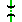
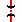

This line extends from near Goulburn in the south-east of NSW south almost to the Victorian border, finishing at the town of Bombala. On the way, it travels within a few km of the national capital, Canberra.
Construction of the line commenced over a hundred years ago, and it survived intact until 12 years ago. At that time it was progressively closed down to a point where the Canberra line branches off. Since then, it has been re-opened from Queanbeyan to Michelago by the Michelago Tourist Railway, a division of the Australian Railway Historic Society, ACT division. Diesel railcars, known as "Tin Hares" operate on this section many times a year.
From Cooma onwards the territory becomes very hilly, and the line winds its way through the hills to the terminus at Bombala.
Re-opening of the line has been proposed a few times, but a number of bridges and railway crossings would need to be re-instated first.
The Cooma-Monaro Railway operates restored railmotors between Cooma and Chakola.
| km | Name | Facility | Status | Opened | Closed | Location | Photos | Diagrams | |||||||||
|---|---|---|---|---|---|---|---|---|---|---|---|---|---|---|---|---|---|
| 0.00 | Joppa Junction | Junction | In Use | - | - | 230.490 | 5 | - | |||||||||
| 0.86 | | Tirranna | Unknown | Closed | 1906 | Jan-1941 | 231.354 | - | - | ||||||||
| 9.33 | | Komungla | Station | Closed | 3-Jan-1884 | 6-Jul-1971 | 239.820 | 1 | - | ||||||||
| 15.46 | Springfield | Loop | Closed | 17-Feb-1953 | unknown | 245.948 | - | 1 | |||||||||
| 19.96 | | Inveralochy | Station | Closed | 1890 | 6-Apr-1974 | 250.450 | 6 | - | ||||||||
| 25.60 | | Lake Bathurst | Halt | Closed | 3-Jan-1884 | 9-Mar-1975 | 256.090 | 7 | - | ||||||||
| 32.02 | | Tarago | Station | In Use | 3-Jan-1884 | - | 262.510 | 5 | 2 | ||||||||
| 45.47 | | Mount Fairy | Unknown | Closed | 1886 | 9-May-1975 | 275.962 | - | - | ||||||||
| 55.00 | | Butmaroo | Unknown | Closed | 24-Feb-1902 | 6-Jul-1971 | 285.490 | - | - | ||||||||
| 63.01 | | Bungendore | Station | In Use | 4-Mar-1885 | - | 293.500 | 4 | 2 | ||||||||
| 68.27 | Bungendore Junction | Junction | Closed | - | - | 298.760 | 1 | - | |||||||||
| 72.15 |  | Brooks Bank Tunnel | Tunnel | In Use | - | - | 302.640 | - | - | ||||||||
| 75.34 | Farrer | Loop | Closed | 10-Feb-1953 | unknown | 305.830 | - | 1 | |||||||||
| 81.77 | | Burbong | Unknown | Closed | 8-Sep-1887 | 20-Jan-1975 | 312.260 | - | - | ||||||||
| 83.63 | Pine Range No 1 Tunnel | Tunnel | In Use | - | - | 314.120 | - | - | |||||||||
| 85.52 | Pine Range No 2 Tunnel | Tunnel | In Use | - | - | 316.010 | - | - | |||||||||
| 90.97 | Queanbeyan | Station | In Use | 8-Sep-1887 | - | 321.460 | 11 | 1 | |||||||||
| 94.81 | | Harman | Unknown | Unknown | unknown | unknown | 325.300 | - | - | ||||||||
| 95.98 | | Letchworth | Unknown | Closed | 22-Oct-1926 | 1-May-1956 | 326.469 | - | - | ||||||||
| 105.14 | Tuggeranong | Unknown | Closed | 8-Dec-1887 | 9-Mar-1975 | 335.629 | 1 | - | |||||||||
| 116.40 | Royalla | Station | Closed | 8-Dec-1887 | 9-Mar-1975 | 346.886 | 4 | 1 | |||||||||
| 123.11 | Williamsdale | Platform | Closed | 29-Aug-1891 | 9-Mar-1975 | 353.595 | - | - | |||||||||
| 139.65 | Michelago | Station | Re-used | 8-Dec-1887 | unknown | 370.140 | 5 | - | |||||||||
| 158.09 | | Colinton | Unknown | Closed | 31-May-1889 | 3-Sep-1975 | 388.578 | 2 | - | ||||||||
|  | Colinton Tunnel | Tunnel | Closed | - | - | - | - | ||||||||||
| 169.30 | Bredbo | Station | Closed | 13-Jun-1891 | unknown | 399.793 | 3 | 1 | |||||||||
| 173.56 | Billilingra | Unknown | Closed | 18-Oct-1894 | May-1941 | 404.045 | - | - | |||||||||
| 186.67 | Chakola | Station | In Use | 31-May-1889 | - | 417.156 | 2 | - | |||||||||
| 195.46 | Bunyan | Station | In Use | 31-May-1889 | - | 425.948 | 1 | - | |||||||||
| 204.18 | Cooma | Station | In Use | 21-May-1889 | - | 434.670 | 12 | 1 | |||||||||
| 220.31 | | Rock Flat | Station | Closed | 20-Apr-1912 | 8-May-1974 | 450.800 | 2 | 1 | ||||||||
| 230.51 | | Coonerang | Station | Closed | 20-Apr-1912 | 1-Apr-1975 | 460.997 | - | 1 | ||||||||
| 236.57 | | Bobingah | Unknown | Closed | 27-Aug-1920 | 9-Mar-1975 | 467.065 | - | - | ||||||||
| 242.97 | | Nimmitabel | Station | Closed | 20-Apr-1912 | unknown | 473.460 | 8 | 1 | ||||||||
| 254.47 | | Maclaughlin | Station | Closed | 2-May-1939 | 6-Jul-1971 | 484.958 | 3 | - | ||||||||
| 263.07 | | Holts Flat | Station | Closed | 21-Nov-1921 | 9-Mar-1975 | 493.560 | 2 | 1 | ||||||||
| 279.54 | | Jincumbilly | Station | Closed | 21-Nov-1921 | 9-Mar-1975 | 510.030 | 1 | 1 | ||||||||
| 289.03 | | Bukalong | Station | Closed | 21-Nov-1921 | 9-Jul-1962 | 519.520 | 6 | 1 | ||||||||
| 304.12 | | Bombala | Station | Closed | 21-Nov-1921 | unknown | 534.610 | 14 | 1 |